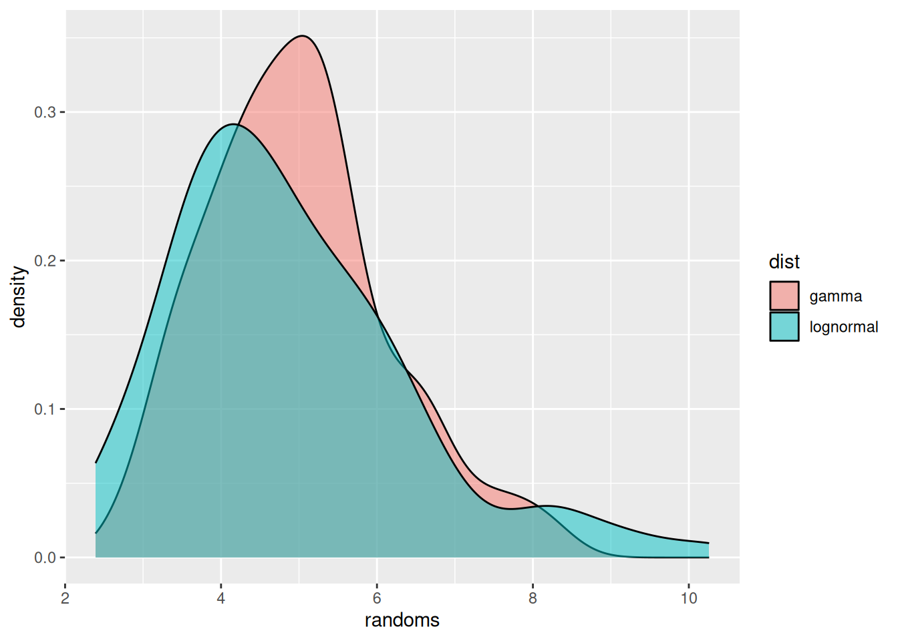
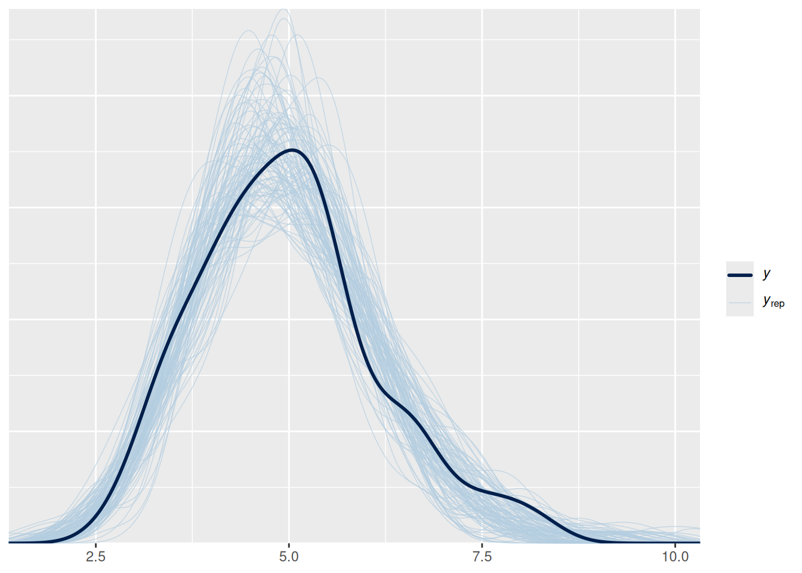

library("nfidd")
library("ggplot2")
library("bayesplot")
library("posterior")Probability distributions and parameter estimation
Introduction
Many important characteristics, or parameters, of epidemiological processes are not fully observed - and are therefore uncertain. For example, in this course this might include time delays, reproduction numbers, or case numbers now and in the future. We can specify the shape of uncertainty around a specific parameter using a probability distribution.
We’ll want to correctly specify this uncertainty. We can do this best by combining our own prior understanding with the data that we have available. In this course, we’ll use this Bayesian approach to modelling. A useful tool for creating these models is the stan probabilistic programming language.
Slides
Objectives
The aim of this session is to introduce the concept of probability distributions and how to estimate their parameters using Bayesian inference with stan.
NoteSetup
Source file
The source file of this session is located at sessions/probability-distributions-and-parameter-estimation.qmd.
Libraries used
In this session we will use the ggplot2 library for plotting and the nfidd package to load the stan models. We will also use the bayesplot and posterior packages to investigate the results of the inference conducted with stan.
Tip
The best way to interact with the material is via the Visual Editor of RStudio.
Initialisation
We set a random seed for reproducibility. Setting this ensures that you should get exactly the same results on your computer as we do. We also set an option that makes cmdstanr show line numbers when printing model code. This is not strictly necessary but will help us talk about the models.
set.seed(123)
options(cmdstanr_print_line_numbers = TRUE)Simulating data from a probability distribution
First let us simulate some data from a probability distribution. In R, this is usually done using a family of random number generation functions that start with r. For example, to simulate random numbers from a normal distribution you would use the rnorm() function. All these functions have a first argument n, the number of random replicates to generate, and then some further arguments that parameterise the probability distribution.
rnorm(n = 10, mean = 0, sd = 1) [1] -0.56047565 -0.23017749 1.55870831 0.07050839 0.12928774 1.71506499
[7] 0.46091621 -1.26506123 -0.68685285 -0.44566197We will use probability distributions to characterise epidemiological delays. These are usually nonnegative because e.g. one cannot develop symptoms before becoming infected, and therefore the incubation period cannot be less than zero. Note that this does not necessarily apply to all distributions, e.g. serial intervals can be negative if person X infects Y but Y develops symptoms first.
Probability distributions that are commonly used in this situation are the gamma or lognormal distributions. These are fairly similar, with one difference being that the lognormal commonly has a “heavier tail” on the right, i.e., gives more probability to occasional very large values, whereas the gamma distribution has more of a tail on the left, i.e., gives more probability to values lower than the mean.
The gamma distribution is characterised by the shape (\(\alpha\)) and rate (\(\beta\)) parameters, with a mean of \(\alpha/\beta\) and variance \(\alpha/\beta^2\). A gamma distribution with mean 5 and variance 2, for example, has \(\alpha = 12.5\) and \(\beta = 2.5\). To simulate from such a distribution, we can use the following R code.
### simulate gamma with mean 5, variance 2
gammas <- rgamma(100, shape = 12.5, rate = 2.5)
head(gammas)[1] 6.645975 5.311519 5.371387 4.954592 4.060700 6.761718mean(gammas)[1] 4.981108var(gammas)[1] 1.361297The lognormal distribution is characterised by the meanlog (\(\mu\)) and sdlog (\(\sigma\)) parameters, with a mean of \(e^{\mu + 0.5\sigma^2}\) and variance \((e^{\sigma^2} - 1) e^{2\mu + \sigma^2}\). A lognormal distribution with mean 5 and variance 2, for example, has (after a bit of calculation) \(\mu = 1.57\) and \(\sigma = 0.28\).
### simulate lognormals with mean 5, variance 2
lognormals <- rlnorm(100, meanlog = 1.57, sdlog = 0.28)
head(lognormals)[1] 4.306326 4.816148 2.390365 3.655954 5.731626 4.694730mean(lognormals)[1] 4.882255var(lognormals)[1] 2.362177We can now plot the two distributions.
df <- rbind(
data.frame(dist = "lognormal", randoms = lognormals),
data.frame(dist = "gamma", randoms = gammas)
)
ggplot(df, aes(x = randoms, fill = dist)) +
geom_density(alpha = 0.5)
We have used geom_density() to get smooth lines. Alternatively we could have used, e.g., geom_histogram() to plot the raw data.
Estimating the parameters of probability distributions
We will now use stan to estimate the parameters of the probability distribution. To do so, we first load in the stan model. Normally, you would do this by saving the model code in a text file called gamma_model.stan and then loading this using cmdstanr::cmdstan_model(). For this course, we included all the models in the nfidd package, and they can be accessed using nfidd_cmdstan_model() which uses cmdstanr::cmdstan_model() to load the specified model included with the package. Afterwards, we can use this model exactly how we would if we had loaded it using cmdstanr directly.
### load gamma model from the nfidd package
mod <- nfidd_cmdstan_model("gamma")
### show model code
mod 1: // gamma_model.stan
2: data {
3: int<lower=0> N;
4: array[N] real y;
5: }
6:
7: parameters {
8: real<lower=0> alpha;
9: real<lower=0> beta;
10: }
11:
12: model {
13: alpha ~ normal(0, 10) T[0,];
14: beta ~ normal(0, 10) T[0,];
15: y ~ gamma(alpha, beta);
16: }
TipArrays in stan
On line 4 there is a data declaration starting with array[n]. This declares an array of size n of the type given afterwards (here: real). Arrays work in a similar way as arrays or vectors in R and its elements be accessed with the bracket operator [. For example, to get the third element of the array y you would write y[3].
TipTake 5 minutes
Familarise yourself with the model above. Do you understand all the lines? Which line(s) define the parameter prior distribution(s), which one(s) the likelihood, and which one(s) the data that has to be supplied to the model?
NoteSolution
Lines 13 and 14 define the parametric prior distributions (for parameters alpha and beta). The additional qualifier T[0,] specifies that the distribution should be truncated with a lower bound of zero (because the alpha and beta parameters of the gamma distribution have to be nonnegative). Line 15 defines the likelihood. Lines 3 and 4 define the data that has to be supplied to the model.
We use the model we have defined in conjunction with the gamma distributed random numbers generated earlier to see if we can recover the parameters of the gamma distribution used. Once you have familiarised yourself with the model, we will use the nfidd_sample() function to fit the model.
Tip
nfidd_sample()
The nfidd_sample() function is a wrapper around the cmdstanr sample() method. It provides sensible defaults for the course and simplifies the syntax. In particular, we are generating 500 samples instead of the default of 1000 to make the models run faster. When running your models, you can use the diagnostic capabilities of stan to test for convergence and ensure that you have generated enough samples: mod$diagnose(). For example, nfidd_sample(mod, data = stan_data) is equivalent to mod$sample(data = stan_data, parallel_chains = 4, iter_wamup = 500, iter_sampling = 500). You can still pass additional arguments like init, adapt_delta, or max_treedepth when needed.
stan_data <- list(
N = length(gammas),
y = gammas
)
gamma_fit <- nfidd_sample(mod, data = stan_data)
NotePassing data to the stan model
The stan_data object is a list with elements that will is passed to the stan model as the data argument to sample. The names and types of the elements need to correspond to the data block in the model (see lines 3 and 4 in the model). Here, we pass the length of gammas as N and the vector gammas itself as y.
NoteStan messages
The nfidd_sample command will produce a lot of messages which we have suppressed above. This is fine and intended to keep the user informed about any issues as well as general progress with the inference. This will come in handy later in the course when we fit more complicated models that can take a little while to run.
In order to view a summary of the posterior samples generated, use
gamma_fit variable mean median sd mad q5 q95 rhat ess_bulk ess_tail
lp__ -151.11 -150.80 1.01 0.69 -153.07 -150.18 1.01 431 391
alpha 17.97 17.80 2.42 2.38 14.31 22.22 1.01 236 258
beta 3.61 3.57 0.49 0.48 2.87 4.50 1.01 236 265You can see that the estimates are broadly consistent with the parameters we specified. To investigate this further, we will conduct a so-called posterior predictive check by comparing random numbers simulated using the estimated parameters to the ones we simulated earlier.
## Extract posterior draws
gamma_posterior <- as_draws_df(gamma_fit$draws())
head(gamma_posterior)# A draws_df: 6 iterations, 1 chains, and 3 variables
lp__ alpha beta
1 -151 15 3.1
2 -150 17 3.4
3 -150 18 3.7
4 -152 18 3.8
5 -150 17 3.4
6 -150 16 3.3
# ... hidden reserved variables {'.chain', '.iteration', '.draw'}## Generate posterior predictive samples
gamma_ppc <- sapply(seq_along(gammas), function(i) {
rgamma(n = length(gammas),
shape = gamma_posterior$alpha[i],
rate = gamma_posterior$beta[i])
})
## Plot posterior predictive check
ppc_dens_overlay(y = gammas, yrep = gamma_ppc)
We can see that the random numbers generated from the posterior samples are distributed relatively evenly around the data (in black), i.e., the samples generated earlier that we fitted to.
Going further
Challenge
- For the model above we chose truncated normal priors with a mode at 0 and standard deviation 10. If you change the parameters of the prior distributions, does it affect the results?
- You could try the model included in
lognormal.stanto estimate parameters of the lognormal distribution.
Methods in practice
- In this course we are building an intuition for the epidemiological processes and uncertainties that underlie typical surveillance data. We’ll continue to work in
stanto build up from simple to more complex models based on our understanding of these data-generating processes. In practice, you might also want to consider other available tools and/or methods. This can be a trade-off: on one hand, adopting an off-the-shelf tool loses the flexibility of a custom approach that is customised to a specific epidemiological context. On the other hand, using available tools avoids duplicated effort, might improve the chances of finding errors, and enables discussing and ultimately enforcing best practice in a rapidly developing field. - Throughout the course, we’ll suggest some examples of available tools, methods, and best practices for you to consider. We encourage you to choose a strategy for model building that’s most appropriate for your context.
Wrap up
- Review what you’ve learned in this session with the learning objectives
- Share your questions and thoughts